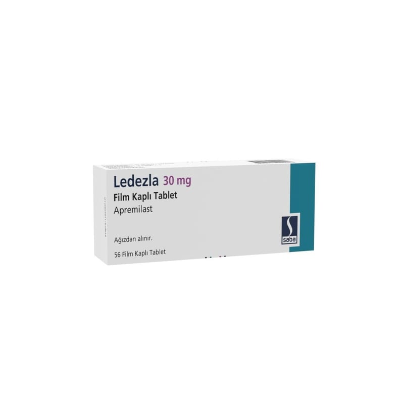

Ledezla 30 mg Film Kaplı Tablet , 56 Adet

Ne için kullanılır
KT · Bölüm 1LEDEZLA ‘apremilast’ etkin maddesini içeren bir ilaçtır. İltihabı azaltmaya yardımcı fosfodiesteraz 4 inhibitörleri olarak adlandırılan immünomodülatör (bağışıklığı düzenleyici) bir ilaç grubuna aittir.
Hızlı salım yapan, bir yüzünde “30” baskılı, elmas şeklinde bej renkli film kaplı tabletlerdir.
LEDEZLA, 56 tablet içeren blister ambalajlarda takdim edilmiştir.
LEDEZLA aşağıdaki rahatsızlıkların görüldüğü yetişkinlerin tedavisi için kullanılır: Psöriatik artrit – ‘Hastalığı Modifiye Edici Antiromatizmal İlaçlar’ (DMARD’lar) olarak adlandırılan bir başka ilaç tipini kullanamazsanız veya bu ilaçlardan birini kullanmışsanız ve işe yaramamışsa. Orta şiddette veya şiddetli plak tipi psöriazis – aşağıdaki tedavilerden birini kullanamazsanız veya bu tedavilerden birini kullanmışsanız ve işe yaramamışsa: - Fototerapi – belli deri alanlarının mor ötesi ışığa tutulduğu bir tedavi - Sistemik tedavi – tek bir lokal bölgeden ziyade bütün vücudu etkileyen ‘siklosporin’ veya ‘metotreksat’ gibi bir ilaçla tedavi
Psöriatik artrit Psöriatik artrit genellikle derinin iltihaplı bir hastalığı olan psöriazisin (sedef hastalığı) eşlik ettiği eklemlerin iltihaplı bir hastalığıdır.
Plak tipi psöriazis Psöriazis (sedef hastalığı), deride kırmızı, pullu, kalın, kaşıntılı, ağrılı lezyonlara neden olabilecek ve aynı zamanda saç derisini ve tırnakları da etkileyebilen iltihaplı bir deri hastalığıdır.
Psöriatik artrit ve psöriazis genellikle yaşam boyu süren rahatsızlıklar olup, halihazırda kesin bir tedavisi yoktur. LEDEZLA iltihap sürecine dahil olan ‘fosfodiesteraz 4’ olarak adlandırılan vücuttaki bir enzimin aktivitesini azaltarak iş görür. Bu enzimin aktivitesini azaltarak, LEDEZLA psöriatik artrit ve psöriazis ile ilişkili iltihabın kontrolüne yardımcı olabilir ve böylece bu rahatsızlıkların belirtileri ve bulgularını azaltabilir.
Psöriatik artritte LEDEZLA ile tedavi şiş ve ağrılı eklemlerde iyileşme ile sonuçlanır ve genel fiziksel fonksiyonunuzu iyileştirebilir.
Psöriaziste, LEDEZLA ile tedavi psöriazis deri plaklarında ve hastalığın diğer belirti ve bulgularında azalma ile sonuçlanabilir.
LEDEZLA’nın psöriazis veya psöriatik artrit görülen hastalarda yaşam kalitesini iyileştirdiği gösterilmiştir. Bu, rahatsızlığınızın günlük aktiviteler, ilişkiler ve diğer faktörler üzerindeki etkisinin öncesine göre daha az olacağı anlamına gelmektedir.